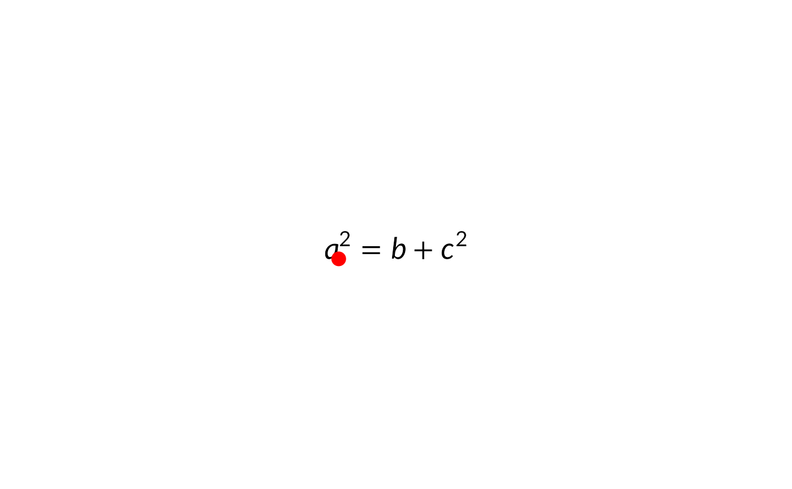

Resolves a \mark{name} that was placed inside the LaTeX
source to a pair of grid units in the grob's parent viewport.
The returned units already account for the grob's viewport position
and hjust/vjust, so you can pass them directly to grid
drawing functions to anchor other graphics on parts of the formula.
Arguments
- grob
A
latexgrobreturned bylatex_grob.- name
The mark name (the argument to
\mark{...}).
Value
A list with elements x and y, each a
unit. Mark coordinates are evaluated in the
grob's parent viewport.
Examples
# \donttest{
g <- latex_grob(r"($a\mark{eq}^2 = b + c^2$)",
x = grid::unit(0.5, "npc"),
y = grid::unit(0.5, "npc"))
grid::grid.newpage(); grid::grid.draw(g)
mk <- grobMark(g, "eq")
grid::grid.points(mk$x, mk$y, pch = 19,
gp = grid::gpar(col = "red"))

# }